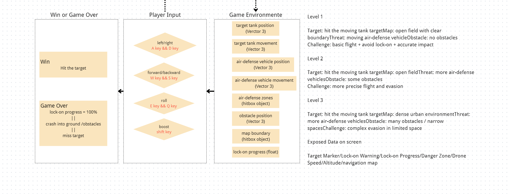

Observe
Read target motion, threat boundaries, obstacle gaps, current speed, and the space still available for recovery.
A 3D spatial-judgment game
Pilot an arcade-style FPV drone toward a moving armored target. Read the airspace, escape moving lock-on zones, and preserve enough speed—and enough room—to make the final correction.
The drone can hover at any orientation and translate independently. Velocity shortens exposure but reduces rotational authority and the room available for correction.
01 / DESIGNER STATEMENT
This project grew from observing FPV drones navigate defensive threats in footage from the Russia–Ukraine war. The design abstracts that experience into spatial judgment rather than military realism: the target and defense units are game objects and mechanical carriers, not a simulation of real operations.
Beginners chase the direct line. Skilled pilots preserve the room to turn, evade, and correct.
02 / DOMAIN KNOWLEDGE
Read target motion, threat boundaries, obstacle gaps, current speed, and the space still available for recovery.
Separate where the drone faces from where it moves. Decide whether to translate, rotate, roll, hover, or spend speed while preserving a recovery path.
Tanks and anti-air vehicles fire after 0.8 seconds inside their visible radius. Enlarged vehicle coverage overlaps the lowered sky layer, where a separate 2-second lock launches missiles. Read the tracers and smoke trails, break exposure, and use solid cover. Any tank contact succeeds; speed buys a shorter exposure window.
03 / SYSTEM DESIGN
Environment data becomes player action, calculated risk, and readable feedback. The graph below is the student-authored system reference.

04 / CHALLENGE PROGRESSION
OPEN-SPACE INTERCEPT
Three moving defense zones, generous boundaries, and a moving target expose the basic speed–control trade-off. Sky defense begins at 27 m; the later challenges lower it to 26 m and 24 m.
RESTRICTED APPROACH
Four enlarged defense zones and solid obstacles force earlier turns, altitude changes, and deliberate route correction.
URBAN INTERCEPT
Five defenses, narrow passages, and overlapping enlarged zones make every burst of speed a commitment.
First playable milestone